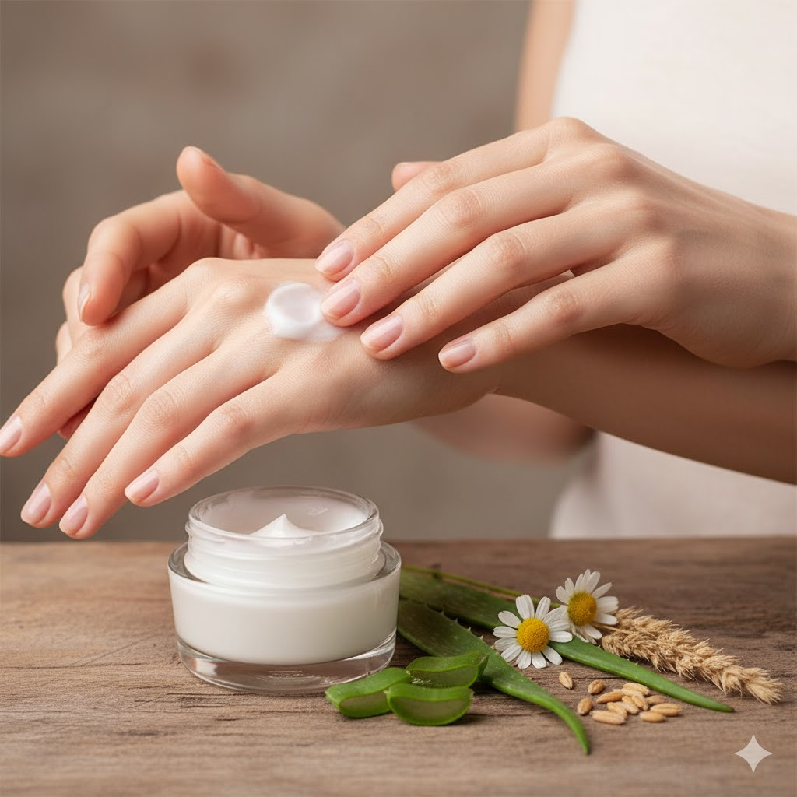
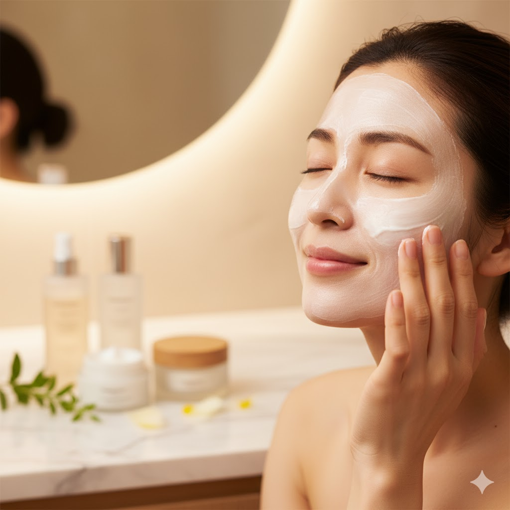
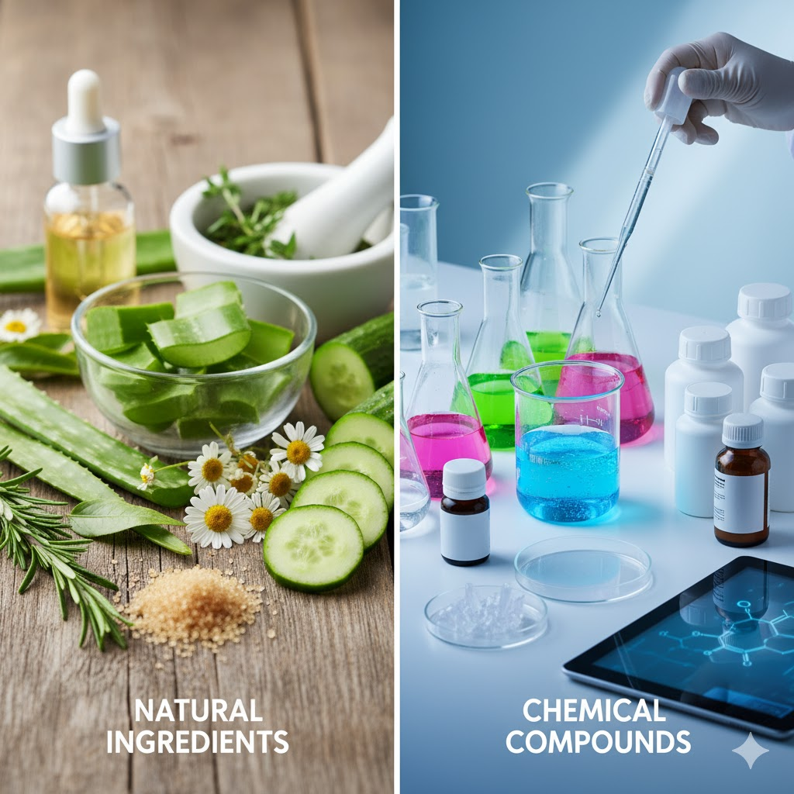

乾燥肌におすすめのオーガニック成分

植物エキスやオーガニッククリームを使用することで、乾燥肌を優しくケア。手や顔に塗るイメージの写真のように、日々のスキンケアで潤いとハリを与えます。
特にホホバオイルやシアバター、アロエベラなどの天然成分は肌の水分保持を助け、外部刺激から守るバリア機能を高めます。化学成分に頼らず、自然由来の保湿力を活かすことで、乾燥によるかゆみや赤みを抑え、しっとり滑らかな肌に整えることが可能です。毎日のスキンケアに取り入れることで、季節の変わり目やエアコンによる乾燥からもしっかり肌を守ります。
30代女性の肌悩みと自然派コスメの関係

30代になると、肌の乾燥や小じわ、ハリの低下が気になり始めます。こうした変化は、加齢だけでなく生活習慣や環境ストレスによっても進行します。
自然派コスメは肌にやさしく、低刺激で敏感肌にも使いやすいため、毎日のスキンケアに安心して取り入れられます。ビタミンや抗酸化成分を豊富に含むオーガニック原料は、肌のハリや透明感を保ち、潤いを与えるだけでなく、健康的な素肌作りをサポートします。忙しい女性でも無理なく続けられるスキンケア習慣を作ることができ、見た目にも心にもゆとりが生まれます。
オーガニック vs ケミカル、どっちが本当に肌にいいの？

スキンケア製品にはオーガニック素材と化学成分を使った製品があります。どちらが良いかは肌質や目的によって変わりますが、オーガニック素材は低刺激で肌への負担が少なく、敏感肌の方でも安心して使用できます。
一方で、化学成分は即効性や保存性に優れ、特定の肌悩みに対して効果的な場合もあります。大切なのは、成分を理解し、自分の肌に合ったものを選ぶこと。オーガニックコスメは自然の恵みを活かした穏やかなケアで、長期的に肌の健康を支えることができ、化学成分に頼りすぎず肌本来の力を高めるサポートになります。